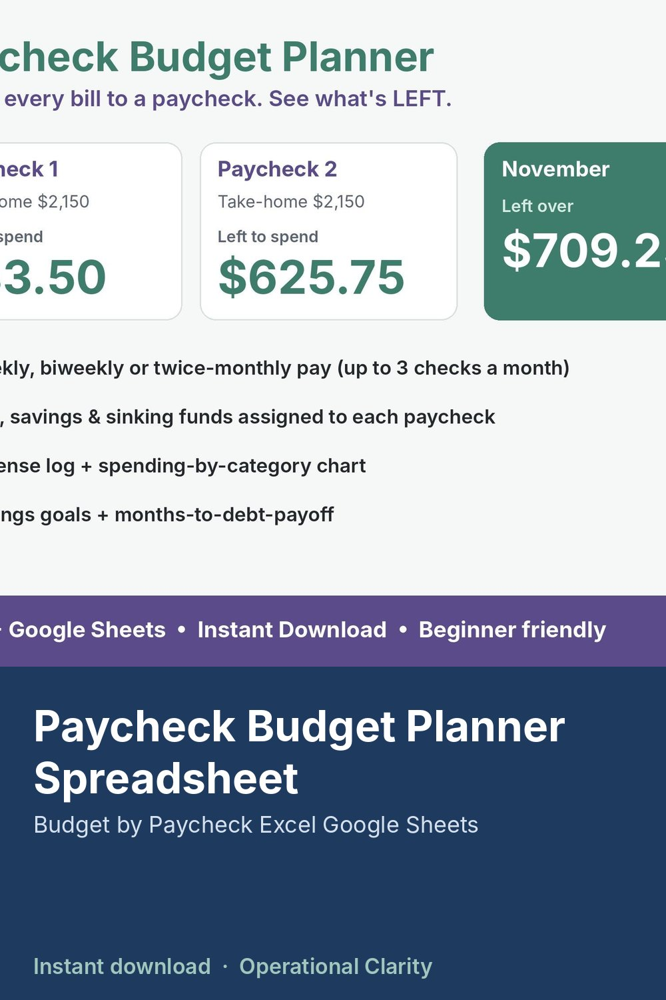

Paycheck Budget Planner Spreadsheet

PAYCHECK BUDGET PLANNER | Budget by Paycheck Spreadsheet | Excel & Google Sheets | Instant Download
Stop running out of money before the next payday. Assign every bill, savings goal and sinking fund to the paycheck that will pay it, and see exactly what's LEFT from each check.
WHAT IT DOES
• Up to 3 paychecks a month, for weekly, biweekly or twice-monthly pay
• List bills and savings, then choose "Paid from: Paycheck 1, 2 or 3"
• Each paycheck shows take-home pay, bills assigned, spending logged and what's left
• An over-assigned paycheck turns red, so you can move a bill before payday
• Monthly totals: income, bills & savings, spending, left over
• Expense log (1,000 rows) with a spending-by-category chart
• Savings goals with progress bars
• Debt payoff: months until each debt is paid off, based on balance, APR and payment
WHAT YOU GET
• 1 Excel workbook (.xlsx): START HERE, PAYCHECK PLANNER, EXPENSE LOG, SAVINGS & DEBT
• Example data included so you can see how it works (just type over it)
HOW TO USE
Duplicate the PAYCHECK PLANNER tab each month to keep a history.
COMPATIBILITY
Microsoft Excel. For Google Sheets, upload the file to Google Drive and open it with Google Sheets.
GOOD TO KNOW
• For personal budgeting. This is a planning tool, not financial advice.
• This is a digital download. No physical item will be shipped.
• Personal use only. No reselling or sharing of the file.